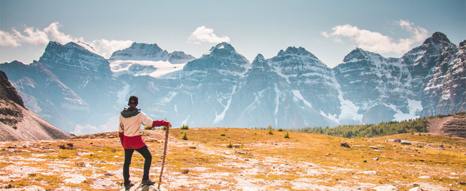

Трекинг походы
Идея организации переходов через горы для взыскательных туристов принадлежала (что и не удивительно!) русскому эмигранту, с первого взгляда оценившему экзотику Непала. Его звали Борис Лиссаневич. Он сразу увидел в этом привлекательный продукт для представителей элиты. Перемещение по горным тропам Непала, ведущих к подножиям вершин, что в два раза выше Альп, было новой идеей в коммерческом туризме.
Однако это было абсолютно обыденным занятием для простых жителей Непала, ежедневно доставлявших продукты и воду по крутым склонам на высоту более километра. Стремительное развитие высоких технологий в производстве одежды, обуви и снаряжения для путешествий привело к тому, что отдых пешком в горах стал не только престижным занятием для богатых, предпочитающих комфорт и моду, но и демократичным способом познания мира для широких масс.
Трекинг: для здоровья и удовольствия
Такой вид отдыха полезен для всех без исключения людей, к нему нет практически никаких противопоказаний или ограничений по возрасту, поэтому в небольших одно-двухдневных походах можно участвовать всей семьёй, чтобы получить массу незабываемых впечатлений. А большие походы на несколько недель позволят обойти другие страны и увидеть их куда более красивыми и настоящими, чем на туристических буклетах.
Трекинговые маршруты
Трекинговые маршруты имеют несколько категорий сложности. Мы рекомендуем начать с самых простых, чтобы для первого раза не слишком утомиться и войти во вкус. После этого вы сможете посетить как популярные курортные страны, так и экзотические места, будучи не просто туристом с фотоаппаратом, а почти частью каждой страны. Зачем запираться в четырёх стенах и зависеть от авиакомпаний, когда вы можете хотя бы на несколько дней стать полностью свободным и наслаждаться жизнью во всём её удивительном многообразии.
Трекинг в России
Иностранцы обожают Россию за ее природу и размеры. Пешие туры отлично помогают почувствовать большое расстояние. В нашей стране можно выбрать туры практически в любом регионе — от Балтики до Приморья. Причем это будут путешествия разной протяженности и уровня сложности.